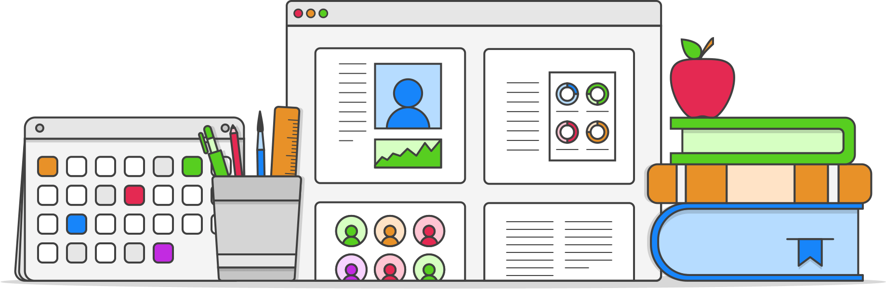

AcadsOnline is an online learning platform designed specifically to take care of your school’s admin and student management functions while helping teachers and students bond with each other, keeping parents in the loop and inspiring collaborative learning as the new way of learning.
Running an education institution is no mean feat. There are so many daily admin tasks that require your
attention and coordination, taking up time you’d rather be spending on more meaningful work such as research
to improve the curriculum and enhancing the students’ learning experience.
We understand the
challenges you face, and we are here to lighten your burden. With AcadsOnline, you have a virtual admin assistant
at your fingertips, taking care of your daily administrative tasks.
Bonding with your students is an important yet time-consuming part of the job. Some students aren’t
comfortable asking questions in class, while others might be introverts. Likewise, bonding with your fellow
teachers helps you learn and improve your teaching skills and vice versa, but you don’t always have time to
chat over coffee.
Using AcadsOnline, you can get the conversation started with students by posting notes
and reference materials from your last class and encouraging them to share their ideas and interpretations.
Similarly, you can also post ideas in a discussion forum for teachers to stimulate exchange of knowledge and
perspectives on teaching strategies or academic research.
Think of it as your virtual sandbox, where you get to debate theories and challenge assumptions through
open exchange of insights and ideas. Two heads are better than one. Collaborative learning gets you further
and often leads to unexpected discoveries and lightbulb moments.
If you’re one of those who shy away
from classroom discussions, this might be right up your alley. We get it. Sharing your views on virtual
platforms is a lot less intimidating, and a whole lot more fun. With AcadsOnline, you’ll be able to connect on a
deeper level with your teachers and fellow students in a fun virtual space. It’s the new way of learning.
No more worrying whether your kids are showing up for class and wondering how they’re faring academically. AcadsOnline for Parents provides you with an online scorecard that monitors their attendance record and academic performance, and an online platform for payments. You will also receive notifications of important updates and news such as exam schedules and graduation dates, etc. You’ll have all the information you need to ensure your kids are on the right track.
We promised you’ll not be spammed, and we hate spammers!